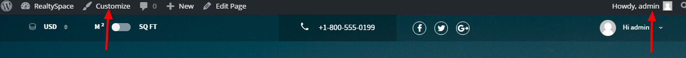

Customization¶
Important
Please check our FAQ , most probabaly there is already an answer to your question. If you didn’t find what you need, please contact us at support@codefactory47.com
To start customizing your site, you must login as admin, the click on the Customize link

- Site Identity - setup the site’s title and tagline or upload a favicon
- Navbar - here you can change the logo. In RealtySpace we use 2 types of logo, one for web(big),
another for mobile version. If you don’t need this feature, just upload the same logo 2 times.
- Enable/Disable Display breadcrumbs
- Enable/Disable Display fixed menu
Menus > Realtyspace Demo - here you can customize/add/remove menu links
- Layout
- Layout type Boxed/Wide
- Sidebar position
- Scrollup button Enable/Disable
Base configuration
- Theme color scheme - change preset color scheme
- Background pattern - use background pattern
- Background image - or background image (higher priority than pattern)
- Background color - background color for all site
- Main Background color - this option works only for
main blocksite - Base font - change fonts for all site (Google fonts)
- Titles font - change fonts for Titles (Google fonts)
- Section titles - change fonts for Section titles (Google fonts)
- Section headings - change fonts for Section headings (Google fonts)
Theme settings > Property/General settings - offer possibilty to change:
- Main currency
- Currency symbol
- Currency sign position
- Thousand separator
- Text to show when the price is not set
- Area unit
Theme settings > Property/Map settings - edit map optins
- Default map location
- Google Maps API key
- Default map zoom
- Autocomplete region
Theme settings > Property/Search settings - Here you can configure search fields:
- Price
- Bedroom
- Area
- Bathroom
- Year
- Garage
- Sort options
- Limit options
Theme settings > Property/Front-End submit :
- Enable/Disable To allow users to submit properties, you have to allow registration first! Go to
Settings/Generaland check theMembership: Anyone can registeroption. - Enable/Disable Review properties by admin before publishing
- PayPal Merchant Account ID or Email
- Submission price
- Currency code
- Enable/Disable To allow users to submit properties, you have to allow registration first! Go to
Theme settings > Property/Social profiles - which social links to use, for adding new, just click on the button Add new row
Theme settings > Property/Search labels - rename search fields labels
Custom CSS&JS - put your custom css and js